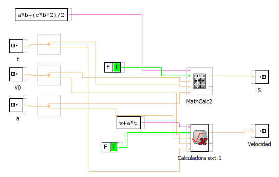
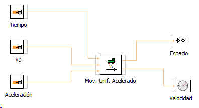

Este bloque modeliza el movimiento Uniforme acelerado. Par ello se presentan en la entrada tres señales:
t: Tiempo
V0: Velocidad inicial
a: Aceleración
Las salidas son dos:
S: Espacio recorrido
Velocidad: Velocidad instantánea.
Este serie el modelo que encapsula el bloque:

Ejemplo basico de aplicación
